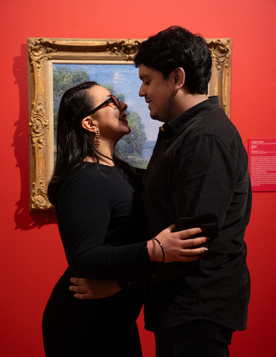
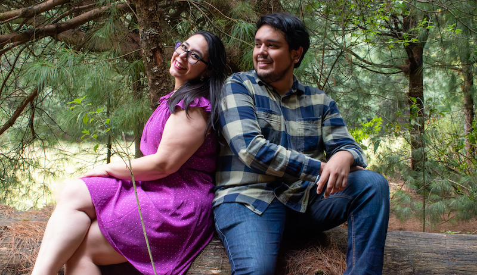
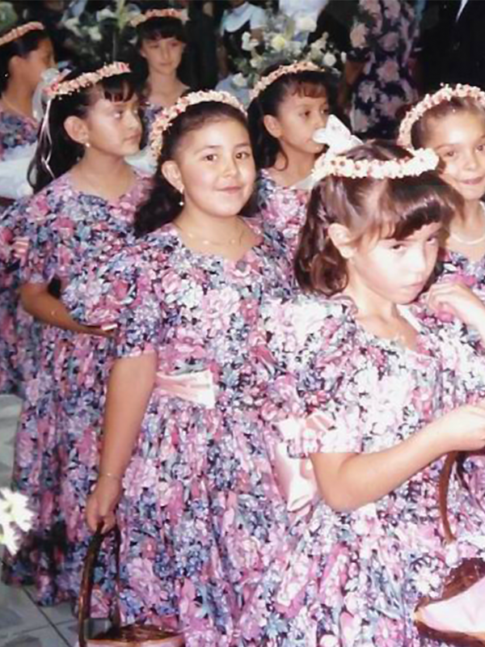
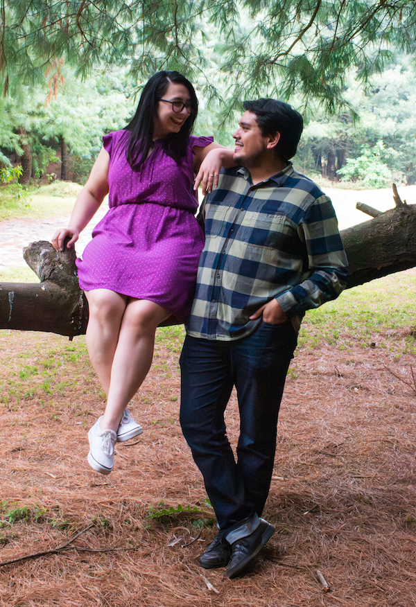
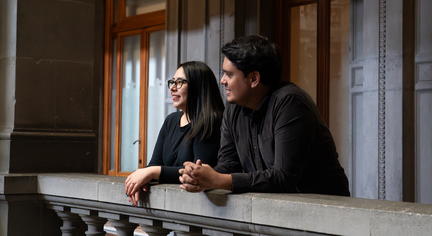
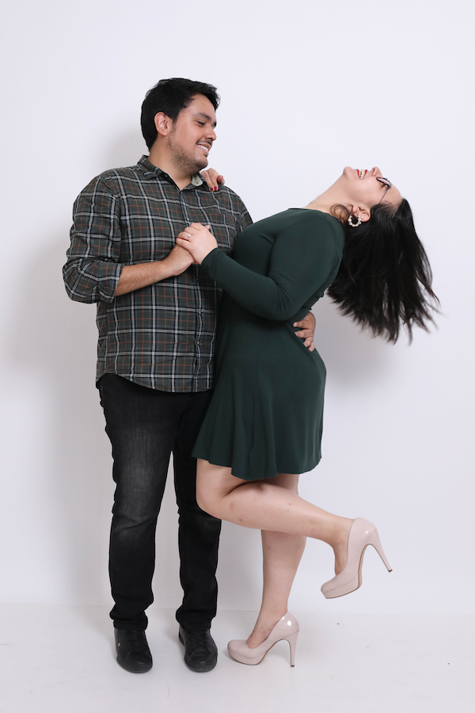
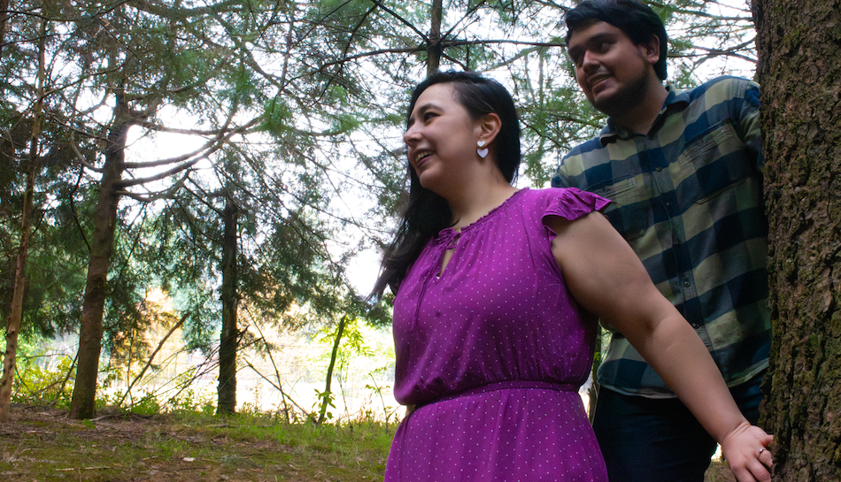
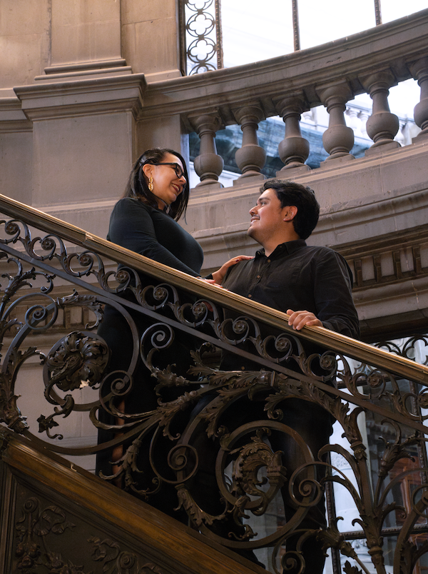

«Sí, el Señor hará grandes cosas por nosotros, y eso nos llenará de alegría.»
Salmos 126:3
Dios nos ha dado mucho más que una historia de amor; nos dio un compañero de vida para caminar en sus propósitos. Nuestro deseo es honrarlo consagrando nuestro matrimonio delante de Él y las personas que amamos, como tú.

25.diez.25
Iglesia Nacional Presbiteriana
Puerta de Salvación
Queremos recompensar tu puntualidad con un espresso, latte o tu café favorito. Anticipa tu llegada y disfruta tu bebida. Comenzaremos el servicio puntualmente –dicen que la novia es medio intensa.
Más que una ceremonia, ¡tendremos un culto de alabanza! Estamos profundamente agradecidos con Dios por unir nuestras vidas y queremos expresarlo por medio de este servicio.
Al terminar el servicio, acompáñanos a celebrar con una fiesta de jardín en el exterior del templo. Podremos compartir abrazos, risas y ¡unos deliciosos tacos! Avalados especialmente por el novio.

¡Confirma tu asistencia! Respóndenos antes del 31 de julio a través del enlace en tu invitación digital.
Garden Party
Nos encantaría ver colores vibrantes, texturas geométricas y florales.
Pero siéntete libre de elegir tu outfit favorito, apropiado para la ocasión.

¡Los niños son bienvenidos!
Tendremos espacios para ellos. Solo pedimos a los padres que supervisen a sus hijos en todo momento
durante el culto y la fiesta.
Seremos inmensamente bendecidos de contar con tu presencia, oraciones y amor durante esta celebración.
Desde ya, queremos darte las gracias: dale play al video.
Si, además, te gustaría expresar tu amor en forma de regalo, puedes encontrar los artículos para el
hogar que más necesitamos en estas dos listas:
Si te vemos cada domingo, seguro has escuchado nuestro grito insignia (cucúuu 🎶), sabes dónde encontrar al novio y a qué hora vamos por el pan. Pero si no, aquí te dejamos cinco datos curiosos del Equipo Borrego - nosotros.

El Salmo 37:25 es el versículo al que recurrimos para animarnos en tiempos de adversidad.
Si nuestra boda fuera el Super Bowl,
Phoenix daría el show de medio tiempo y el Buki cantaría el Himno Nacional Mexicano… con solo de
pandero, obvi.

En nuestro camino juntos, hemos aprendido a ser empáticos con lo que no entendemos, a practicar la misericordia, y que el amor trasciende las palabras.

seríamos pan francés acompañado de salchicha asada. Versátiles y deliciosos, como nuestro primer desayuno juntos. La specialità.

Tomar rutas desconocidas es nuestra pasión.
Como en Michoacán, donde temimos un encuentro con las autodefensas y ¿su máquina de tortillas? O en San Luis Potosí, donde Maps nos mandó a cruzar un río deslavado.

¿Quieres seguir nuestra preparación para el gran día? ¡Aquí está todo el chisme!
Síguenos